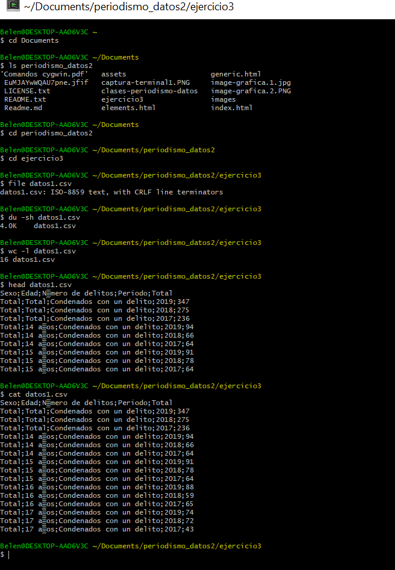
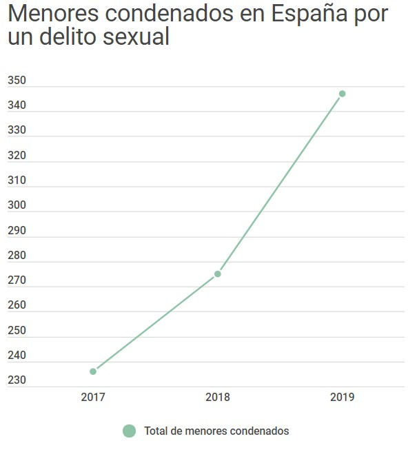

Ejercicio 3. Análisis de datos
Utilizando la terminal cigwin para organizar una base de datos
Este último ejercicio consiste en administrar una serie de datos utilizando el terminal y el editor nano. Los datos utilizados han sido obtenidos del INEHe elegido la base de datos de menores condenados de delitos sexuales, porque me parecía un tema importante, del que no se habla demasiado y además, los datos han tenido un crecimiento exponencial. En concreto, he hecho dos gráficas. La primera se centra en el evolución del número de delitos en los años 2017, 2018 y 2019. En el sengundo le he dado mayor importancia a la edad de los condenados durante 2019 ya que me parecen unos datos impactantes. Los datos los he descargado desde la página del INE, en formato CSV.
El siguiente paso,una vez descargados los archivos, creé una carpeta específica en el ordenador para guardar dichos datos. En esta ocasión, la base de datos no contenía una gran cantidad de muestras, así que organizarlos no fue complicado. El primer paso fue utilizar el comando "cd Documents" y una vez ahí, utilicé ls para saber qué había dentro. Luego, fui accediendo a las diferentes carpetas hasta llegar a la que contenía los datos que me había descargado. Tras entrar en el archivo, esccribo "file datos1.csv" para saber qué información contiene. A continuación, para saber cuánto pesa el archivo, utilizo el comando "du -sh" y "wc -l" para saber cuántas líneas tiene la base de datos, que en este caso son 16 datos. Para ver las primeras líneas de mi documento utilizo "head" para ver las 10 primeras líneas, y a continuación pongo el comendo "cat" para que lea y muestre todos los datos.
Accediendo a los datos desde la terminal cigwin
Visualización de datos con Datawrapper
Con esta aplicación he podido subir directamente el archivo csv que contenía la base de datos. He decidido realizar dos visualizaciones. Una centrada en la evolución de las condenas a menores por delitos sexuales en los años 2017, 2018 y 2019. En el segundo, he optado por destacar la edad de los condenados en el último año.
Gráfico 1
Para este gráfico que destaca la evolución a lo largo de los años, he escogido un gráfico de línea. Así, de un solo vistazo puedes ver cómo ha sido la tendencia; en este caso, al alza.
Gráfico 2
Para mostrar las edades de los condenados, he optado por un gráfico de barras. Es simple, pero transmite el mensaje sin errores. Se puede ver claramente que durante el año 2019, el mayor número de condenas fueron para los menores de 14 años.

En estos casos, los colores de las gráficas no han sido elegidos por ninguna razón en especial, ya que es un tema que no está asociado a una gama cromática específica.